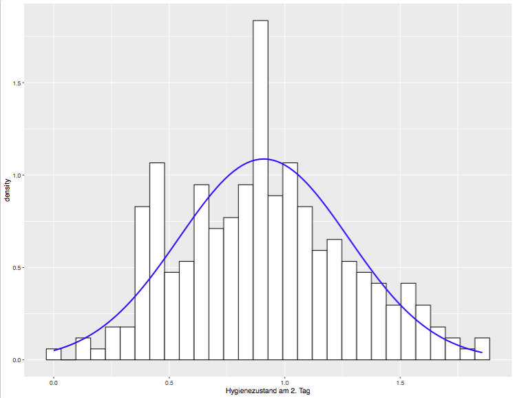
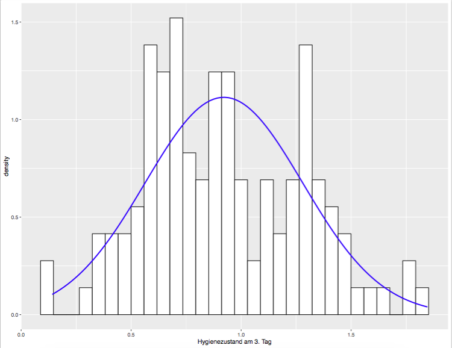

Chapter 10 Explorative Datenanalyse
10.1 Test für Normalverteilung: Shapiro-Wilk
Shapiro-Wilk Test: shapiro.test()
rexam = read.table("rexam1.dat", header = T)
shapiro.test(rexam$exam)- testet, ob eine Stichprobe signifikant von der Normalverteilung abweicht
- p-Wert kleiner .05 zeigt Abweichung von Normalverteilung an
10.2 Kleiner Exkurs: p-Werte
- Geben Hinweis, ob untersuchte Stichprobe signifikant von Normalverteilung abweicht (p\(<\).05) oder nicht (p\(>\).05)
- Dabei Signifikanzniveau von .05 festgelegt (irgendwo muss man ja anfangen)
Signifikanzniveaus \(\alpha\) geben an, welches Risiko man eingehen will, dass das Ergebnis falsch ist (Signifikanzniveaus: .05, .001 \(\dots\))
- Signifikanzniveau \(\alpha\) = .05, p \(<\) .05: man nimmt an, dass das Ergebnis mit 95%-er Wahrscheinlichkeit richtig ist
- Signifikanzniveau \(\alpha\) = .001, p \(<\) .001: man nimmt an, dass das Ergebnis mit 99% Wahrscheinlichkeit richtig ist
- \(\rightarrow\) bei mehreren Signifikanztests Wahrscheinlichkeit hoch, dass das Ergebnis nicht korrekt (20 Signifikanztests: Wahrscheinlichkeit geht gegen 100%, dass mindestens einer der Tests ein falsches Ergebnis liefert)
dabei geht man von einem Signifikanzniveau von 95% aus
10.3 Shapiro-Wilk für Gruppen
rexam = read.table("rexam1.dat", header = T)
by(rexam$exam, rexam$uni, shapiro.test)## rexam$uni: Duncetown University
##
## Shapiro-Wilk normality test
##
## data: dd[x, ]
## W = 0.97217, p-value = 0.2829
##
## ------------------------------------------------------------
## rexam$uni: Sussex University
##
## Shapiro-Wilk normality test
##
## data: dd[x, ]
## W = 0.98371, p-value = 0.7151by(rexam$computer, rexam$uni, shapiro.test)## rexam$uni: Duncetown University
##
## Shapiro-Wilk normality test
##
## data: dd[x, ]
## W = 0.97764, p-value = 0.4571
##
## ------------------------------------------------------------
## rexam$uni: Sussex University
##
## Shapiro-Wilk normality test
##
## data: dd[x, ]
## W = 0.94392, p-value = 0.01931Vergleich Ergebnisse des Shapiro-Wilk Tests mit den deskriptiven Daten!
library(psych)
library(ggplot2)
qplot(sample = sussex$exam)
qplot(sample = dunce$exam)
qplot(sample = sussex$computer)
qplot(sample = dunce$computer)Wenn die Werte im Q-Q Plot konsistent über oder unter der idealen Linie liegen, dann weicht die Kurtosis ab.
Wenn die Werte in einer Art S-Kurve angeordnet sind, dann weicht die Schiefe von der Normalverteilung ab.
Bei einer großen Stichprobe kann eine geringe Abweichung schon ein signifikantes Ergebnis des Shapiro-Wilk Testes bedeuten. Die Ergebnisse sollten auch immer mit einem Histgramm, den Q-Q Plots und den Schiefe und Kurtosis-Werten interpretiert werden.
10.4 Testen verschiedener Gruppen: Varianz
Homogenität der Varianz
Annahme: wenn Daten verschiedener Gruppen gesammelt werden und verglichen werden, dann sollte die Varianz der Daten beider Gruppen gleich sein. Man kann diese Annahme mithilfe von deskriptiver Beschreibungen – Graphiken – überprüfen. Ein alternativer Check dieser Annahme liefert der Levene Test: liefert eine Aussage darüber, ob die Varianzen der Werte zwischen zwei Gruppen homogen ist.
| homogen | heterogen |
Direkter Vergleich der Varianzen zwischen Gruppen subjektiv, wenn diese deskriptiv erfolgt. Levene’s Test leveneTest() benötigt car Paket. Test gibt zurück mit welcher Wahrscheinlichkeit die Varianzen mehrerer Gruppen homogen ist.
#install.packages("car")
library(car)
leveneTest(rexam$exam, rexam$uni)- Bei nicht signifikantem Ergebnis: Pr (\(>\)F) größer als .05, Varianzen im Vergleich zwischen beiden Gruppen nicht signifikant verschieden – Homogenität der Varianz kann angenommen werden
- Bei signifikantem Ergebnis: p < .05, Varianzen beider Gruppen signifkant verschieden – zu 95% keine Homogenität der Varianzen
10.5 Extremwertbereinigung: Versuchspersonen
- Möglichkeit z.B. schiefe Daten eventuell in eine Normalverteilung zu bringen, ist die Extremwertbereinigung. Eine Möglichkeit ist, bei experimentell erhobenen Daten überprüfen welche Versuchspersonen sich nach objektiven Kriterien ausschliessen lassen - dies ist besonders bei online Experimenten wichtig, da diese sehr störanfällig sind.
- Versuchspersonen aus der Analyse ausschliessen, von denen man annehmen kann, dass sie auf irgendeine Weise von den anderen Versuchspersonen abweichen und somit nicht in die Stichprobe passen
- \(\rightarrow\) Bsp. eine Versuchsperson hat während self-paced reading Studie sein Brot ausgepackt und angefangen zu essen. Man kann davon ausgehen, dass die Lesezeiten dieser Versuchsperson signifikant von den Lesezeiten der anderen Versuchspersonen abweicht
Nicht-normalverteilte Daten oder heterogene Varianzen zwischen Gruppen
- Wenn Daten nicht normalverteilt sind oder die Varianzen zwischen Gruppen heterogen sind, dann ist ein direkter Vergleich zwischen diesen Gruppen schwierig.
- Wenn Ausschluss von Versuchspersonen nicht zur Lösung führt, dann kann Transformation der Daten eine mögliche Lösung sein.
- Wenn für eine Datentransformation entschieden, dann sollten alle Daten die miteinander verglichen werden, auch transformiert werden.
10.6 Datentransformation: Logarithmus Transformation
- Logarithmus Transformation kann den rechten Teil einer Verteilung reduzieren
- \(\rightarrow\) kann rechtsschiefe oder positive Schiefe einer Verteilung korrigieren
- log() umgekehrte Exponentialfunktion
- \(log_b(x) = y\) \(b^y = x\)
- log() zu welcher Basis - log10 (Basis 10), log2 (Basis 2) – log() (natürlicher Logarithmus, eulersche Zahl: 2.7183)
10.7 Datentransformation: Logarithmus Transformation
- Logarithmus kann nicht mit Zahl 0 gebildet werden, wenn Originalwerte 0 enthalten, alle Werte +1
- Beispiel: DownloadFestival.dat von letzter Woche!
plotte Tag 2
transformiere die Daten mit log
log(df$day1 + 1)- und plotte nochmal (kurze Wiederholung, wie ging der Plot?)
ggplot(df,aes(logday2))
+ geom_histogram(aes(y = ..density..),
colour = "black", fill = "white")
+ labs(x = "Hygienezustand am 1. Tag")
+ stat_function(fun = dnorm,
args = list(mean = mean(df$logday2, na.rm = TRUE),
sd = sd(df$logday2, na.rm = TRUE)),
colour = "blue", size = 1)- dasselbe dann mit Tag 3
10.8 Vergleich
10.9 Datentransformation: Wurzeltransformation
- sqrt() diese Transformation hat beeinflusst eher grössere Werte
- höhere Werte werden dadurch eher in die Mitte geschoben
- \(\rightarrow\) Folge, Werte am rechten Rand werden abgeschnitten, ähnlich zu Logarithmus Transformation
- Transformation nicht mit negativen Werten möglich
- Vergleich der Transformation von Day 2 mit und ohne Transformation
sqrt(df$day2)- Vergleiche Logarithmus und Wurzeltransformation für die Festivaldaten für Tag 2 und Tag 3
- Sind diese Daten nach der Transformation jetzt normalverteilt?
|  | |
|  |
10.10 Modelle
“Alle Modelle sind falsch, aber einige sind nützlich.”
- Ein Modell liefert eine einfache Beschreibung der Daten
- mithilfe eines Modells lernt man signifikante Faktoren von Noise zu unterscheiden
- vorhersagende Modelle, werden nicht die mathematischen Grundlagen herleiten, sondern Intuitionen entwickeln, wie statistische Modelle erarbeitet werden
- Grundlagen: lineare Modelle
- Erstellen eines Modells
- einfaches Modell, um komplexe Daten zu verstehen
10.11 Grundlagen eines Modells
- Modelle in Muster und Residuen aufgeteilt
*Muster die von Modell vorhergesagten Werte
Residuen Werte, die nicht vom Modell vorhergesagt werden
Modell Fit
- Wie sehr kann das Modell die erhobenen Daten repräsentieren
degree to which modell represents data collected
Vergleich systematische gegen unsystematische Varianz
\[\begin{equation} test~statistic = \frac{variance~explained~by~model}{variance~not~explained~by~model} = \frac{effect}{error} \end{equation}\]10.12 Einfache Modelle: Mittelwert
- arithmetischer Mittelwert: \(\bar{X} = \frac{x_1 + x_2 ... x_n}{n}\)
- Probleme dieses Modells für die Daten
10.13 Einfache Modelle: Standardabweichung
Standardabweichung: Messwert, der anzeigt wie repräsentativ ist der Mittelwert als Modell für die Daten
- kleine sd: geringe Abweichung der einzelnen Beobachtungen vom Mittelwert
große sd: große Abweichung der einzelnen Beobachtungen vom Mittelwert
10.14 Einfache Modelle: Standardfehler
- Standardfehler: SD of the sample means
- große Stichprobe: Daten normalverteilt angenommen
- leicht verschiedener Wert
Der Standardfehler zeigt die Abweichung vom Mittelwert einzelner Stichproben vom Mittelwert der Gesamtpopulation. In der Graphik unten wird der Unterschied der Mittelwerte verschiedener entnommener Stichproben vom Mittelwert der Gesamtpopulation illustriert.
- s = sample standard deviation
- N = number of observations of the sample
central limit theorem:
- bei großer Stichprobe können wir Gleichung als angemessene Annäherung an standard error annehmen - Daten sind normalverteilt
- bei kleiner Stichprobe (N \(<\) 30) - Daten nicht normalverteilt
10.15 Modelle: Konfidenzintervall
Konfidenzintervall man nimmt an, dass der wirkliche Mittelwert der Gesamtpopulation in ein Intervall zwischen Ober- und Untergrenze fällt. Dieses Intervall ist das Konfidenzintervall.
- Konfidenzintervalle sind Ober- und Untergrenzen
diese Grenzen so angelegt, dass der wahre Mittelwert der Gesamtpopulation mit einer bestimmten Wahrscheinlichkeit (95% oder 99%) zwischen Ober- und Untegrenze liegt
- bei großer Stichprobe Daten normalverteilt angenommen
- angenommener normalverteilter Datensatz hat Mittelwert: 0 und SE: 1
- bei einem solchen Datensatz kennen wir Konfidenzintervall: -1.96 \(\leftrightarrow\) 1.96
- \(\rightarrow\) 95% Wahrscheinlichkeit, liegt der wahre Mittelwert zwischen -1.96 und 1.96 (bei normalverteilten Daten mit Mittelwert 0 und SE 1)
- normalverteilte Daten können transformiert werden, so dass Sie den Mittelwert 0 und den SE 1 haben
wenn wir Mittelwert und SE einer normalverteilten Stichprobe haben, kann Konfidenzintervall ausgerechnet werden